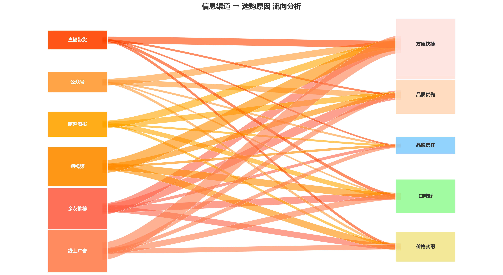

引言
9月10日，罗永浩发微博吐槽西贝菜品几乎全是预制菜，价格却不便宜，预制菜又一次掀起了讨论热潮。近几年，预制菜逐渐进入大众视野，引发了不少争议。当习以为常的后厨现制与预制菜的实际使用形成鲜明反差，消费者的不满情绪瞬间被点燃，预制菜也再次被推上舆论的风口浪尖。
在社交平台上，“抵制预制菜”“餐厅预制菜就是欺骗”的声音此起彼伏，仿佛预制菜成了餐饮行业里“见不得光”的存在。然而令人惊讶的是，无论是日常生活中还是各大数据统计都显示，预制菜市场的发展势头没有半点放缓的趋势，仍然稳定地快速增长中。
预制菜并非新生事物，早在几十年前就已存在于我们的生活中。从早期的罐头食品、方便面到近年来的即热米饭、半成品菜肴，预制菜的形态和种类不断丰富。据行业报告显示，2023年中国预制菜市场规模已突破5000亿元，预计到2026年将达到万亿级别。
这一矛盾现象背后，折射出的是现代社会生活方式的变迁、餐饮行业的转型以及消费者需求的多元化。本报告将从消费者、餐厅、国家标准和生产流程四个维度，深入剖析预制菜争议背后的真相，探讨其发展的机遇与挑战。
口嫌体正直的消费者
消费者的矛盾心态
问卷显示，消费者对预制菜的评价整体较低，约60%的消费者对预制菜有着负面印象。这些负面评价由对食品安全的不信任、消费知情权和产品价格等多方面共同组成。
消费者最担心的问题集中在三个方面：一是添加剂过多，担心影响健康；二是食材新鲜度无法保证；三是价格与价值不符，认为预制菜成本低但售价高。
消费者对预制菜的主要担忧

数据揭示的真实消费行为
尽管负面评价居多，但实际消费数据却呈现出不同的景象。调查显示，超过80%的消费者曾经购买或食用过预制菜，其中近40%的消费者每月至少购买一次。
现代都市生活节奏加快，工作压力增大，使得人们越来越不愿意在厨房花费过多时间。预制菜的便捷性正好契合了这一需求，10分钟就能完成一道"大菜"。
不同年龄段购买预制菜占比
背后的社会动因
家庭结构小型化
第七次人口普查数据显示，2020年我国户均人口2.62，较上一次普查减少0.48人，已不再是传统的“一家三口”。其中，“一人户”家庭超过1.25亿户。
随着家庭越来越小，做饭的单位成本也随着人数的减少而提高。小型家庭对烹饪简易化的需求提升，会更倾向点外卖、选购预制菜。
时间成本上升
一线城市白领平均通勤时间超过45分钟，加上每日8-10小时的工作时长，留给家务和烹饪的时间所剩无几。预制菜的出现，正是对这种时间荒的直接回应。
特别是在工作日的晚餐场景中，预制菜的便捷性优势尤为明显。数据显示，工作日晚餐是预制菜消费的高峰时段，占全天消费的53%。
消费者对预制菜的评价
数据显示，尽管争议不断，但80%以上的消费者都有购买和食用预制菜的经历，反映了市场的真实需求
消费者信任度分析
研究发现，消费者对预制菜的信任度与其健康评分和食用频率呈正相关。知名品牌和有明确 原料 标识的产品更容易获得消费者信任。

餐厅的现实选择
从后厨到中央厨房
当消费者还在争论预制菜的好坏时，餐饮行业早已悄然完成了一场厨房革命。从连锁品牌到地方餐馆，预制菜的使用已成为普遍现象，只是程度不同而已。
西贝、海底捞、眉州东坡等知名连锁品牌都在不同程度上使用预制菜或半成品。一位不愿具名的连锁餐厅厨房负责人透露，他们餐厅60%以上的菜品都使用预制或半预制食材。
厨房负责人承认部分菜品为提前加工的半成品，通过冷链配送至门店
透明化的尝试
在预制菜使用成为行业常态的背景下，部分品牌开始尝试透明化策略，主动向消费者说明哪些菜品使用了预制或半预制食材。
老乡鸡：明牌策略
老乡鸡公开宣称部分菜品使用预制菜，并在菜单上明确标注加工等级划分，让消费者自由选择。这种透明化策略赢得了部分理性消费者的认可。

明确标注餐厅现做、半预制、复热预制等不同加工方式
餐厅选择预制菜的核心原因
成本控制
虽然预制菜的食材成本略高，但能大幅降低人工和租房成本。以20元的外卖餐品为例，人工成本直接减半，最终利润率上升超40%。
品质稳定
预制菜通过标准化生产流程，能够保证菜品口味和质量的一致性，避免因厨师技术差异导致的品质波动。这对于连锁品牌维持统一形象至关重要。
出餐效率
在餐饮高峰期，预制菜能显著提高出餐速度，减少顾客等待时间。数据显示，使用预制菜的餐厅高峰期出餐效率可提升3倍以上，大大改善了顾客体验。
消费者对餐厅使用预制菜的态度
支持透明使用
35%的消费者表示，只要明确告知，接受餐厅使用预制菜
价格敏感
62%的消费者认为使用预制菜的菜品应降价20%以上
坚决反对
18%的消费者完全不能接受餐厅使用预制菜
国家标准的边界
预制菜的官方定义
2024年3月，国家市场监管总局等六部门联合发布《关于加强预制菜食品安全监管 促进产业高质量发展的通知》，首次从国家层面为预制菜"正名"并划定了底线。
不添加防腐剂
国标明确规定预制菜不得添加防腐剂，主要依靠冷链技术保鲜
工业化预加工
采用标准化的工业生产流程，保证产品质量和口味的一致性
需加热后食用
产品需经过加热或熟制后方可食用，区别于即食食品
预制菜四大分类
即食类
开封即食，如沙拉、酱卤肉制品等，无需额外加工
即热类
加热即可食用，如宫保鸡丁、鱼香肉丝等
即烹类
需烹饪后食用，如腌制好的牛排、鱼排等
即配类
经过清洗切配的生鲜净菜，需自行调味烹饪
国标与现实的三大鸿沟
知情的沟壑
国标鼓励餐饮企业明示预制菜使用情况，但未作强制要求。这直接导致了消费端强烈的"知情权焦虑"——调查显示，超过90%的受访者强烈要求餐厅明确标识是否为预制菜。当消费者无从知晓自己吃的是什么时，不信任感便会滋生。
健康的迷思
尽管国标禁止添加防腐剂，但消费者对预制菜的健康疑虑并未消除。一方面，部分企业为延长保质期，可能使用更复杂的食品添加剂组合；另一方面，反复解冻加热过程中可能产生的营养流失和有害物质，也成为消费者担忧的焦点。
监管的挑战
预制菜产业链长、环节多，从原料采购到生产加工，再到冷链运输和终端销售，每个环节都可能存在质量安全风险。目前监管体系仍不完善，跨区域监管协调难度大，导致部分小企业存在侥幸心理，影响了整个行业的信誉。
生产线上的真相
华中预制菜之都：荆州
要看清市面上预制菜的真实面貌，不妨将目光投向湖北荆州——这座主动将自身与预制菜绑定的城市，如今高调打出"华中预制菜之都"的旗号，它的转型之路，恰是中国预制菜产业发展的一个缩影。
产业生长的三大逻辑
-
天时
便捷需求爆发与政策东风，一人户家庭超1.25亿户
-
地利
江汉平原鱼米之乡，提供稳定优质的原料源头
-
人和
传统农业转型需求与就业压力推动产业升级

标准化生产流程
原料采购与检验
大宗原料统一采购，经过严格的质量检测，确保食材新鲜安全，检测报告随原料一同入库。标准化企业会对每批次原料进行农残、重金属等指标检测。
自动化处理
通过自动化设备进行清洗、切割、分拣等预处理，减少人工接触，提高效率和卫生标准。大型企业的生产线每小时可处理数吨原料。
标准化烹饪
采用标准化配方和烹饪工艺，通过智能设备控制温度、时间等参数，确保每批次产品口味一致。重要参数偏差会自动报警并停机。
快速冷却与包装
烹饪完成后迅速冷却至低温，避免细菌滋生，然后进行无菌包装。包装材料需符合食品级标准，并能承受冷链运输环境。
冷链储存与运输
全程低温冷链运输，确保产品在储存和运输过程中的质量安全。专业冷链物流车配备温度监控系统，数据实时上传。
标准之外，更需透明的信心
符合国家标准的预制菜，本质是农业生产与食品工业化的正常延伸，它并非原罪。而国标、产业现实与消费者认知之间存在一道"信任的沟壑"。真正的挑战，不在于"要不要发展"，而在于如何让发展更透明、更负责。
预制菜这盘菜能否实现生产者、餐厅与消费者的共赢，不仅取决于国标这条"底线"能否守牢，更取决于能否建立一条让信息阳光化、健康指标更明确的"高线"。这需要行业更主动的透明，也需要监管更细致的介入。毕竟，吃进嘴里的东西，安全感来自知情，放心源于透明。